Mobile‑first · scalable · iOS · Android · Apple Watch · Mac
One SDR client that fits every screen you own. VibeDSP is light enough to run on your wrist and powerful enough to fill a television — so the same radio, the same waterfall and the same controls follow you from one to the other.
£2.99 covers Apple's fee, not a paywall — VibeSDR is GPLv3 and the source is free forever.
Scaling
Grab the window and drag it. The layout follows in real time — landscape controls become portrait ones as the shape changes, panels find new homes, and the waterfall carries on scrolling through all of it without a single redraw. No stutter, no reload, no moment where the app catches up with you.
The same behaviour is what lets one build run on a watch, a phone, a tablet and a television. It isn't three apps with three layouts. It's one that genuinely fits whatever it's given.
And, entirely by accident: because it's built properly for iPad, it runs on Apple Silicon Macs as a desktop app. We didn't plan that one. It just works.
VibeSDR Jr Free beta
Its own connection, its own audio, no phone involved. Turn the Digital Crown to tune, press and hold for the menu, and leave the handset at home.
Not a remote control for the phone in your pocket — a receiver, on your wrist, that connects to the radio by itself.
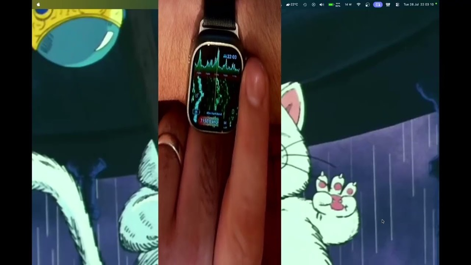
Simple elegance
Real tuners were a pleasure to use and impossible to get wrong. SDR software is the opposite: enormously capable, and a wall of panels. VibeSDR sits in the gap — the reach of software‑defined radio with the feel of a good tuner.
The controls are built for fingers and thumbs, because that's what you're holding the thing with. As Steve Jobs put it when he launched the iPhone: the best pointing device in the world is one we're all born with ten of.
This isn't desktop SDR software shrunk down to fit. It was built for mobile from the first line.
Two control schemes
The drum. Eighties boombox, in acrylic and glow. Not a slider dressed up as a dial — a weighted drum with real inertia and haptics underneath it. Spin it and it runs on. Flick it and it coasts down. Catch it and it stops dead.
The buttons. Or, if you'd rather, a nineties Saab dashboard at night — green glowing on black. Tap to step the frequency with a click you can feel. Hold, and it sweeps the band, exactly as the real thing did.
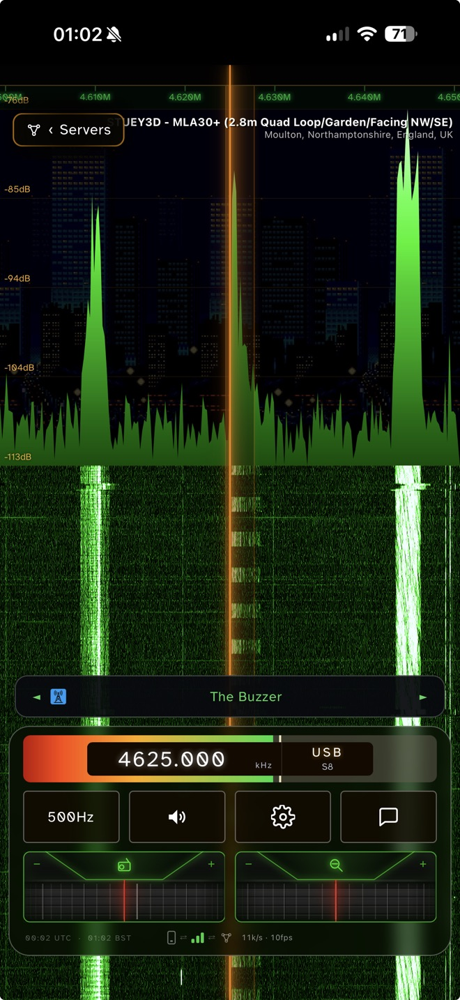
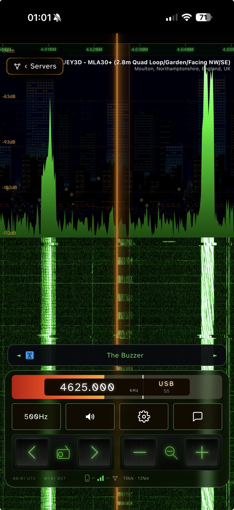
The same station, the same screen, the same second on 4625 kHz. Only the bottom inch changes.
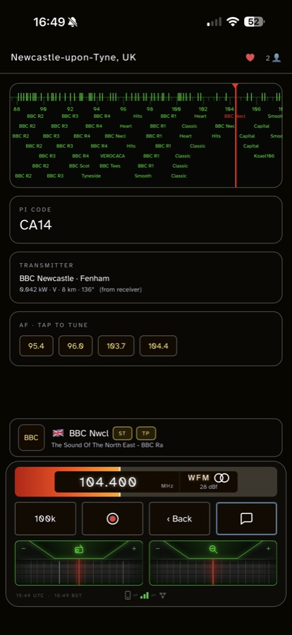
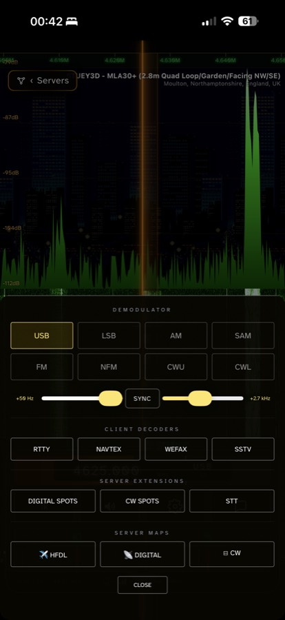
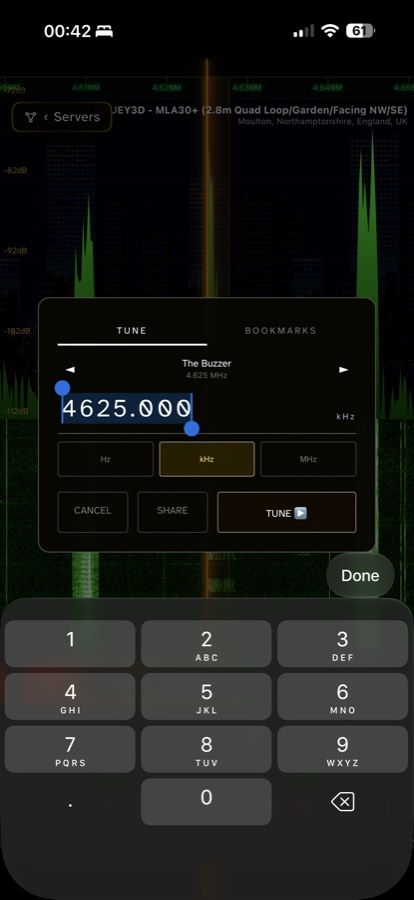
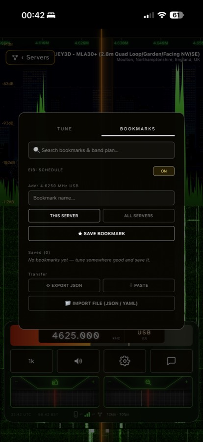
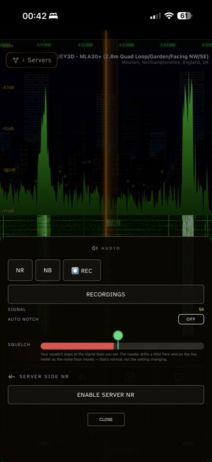
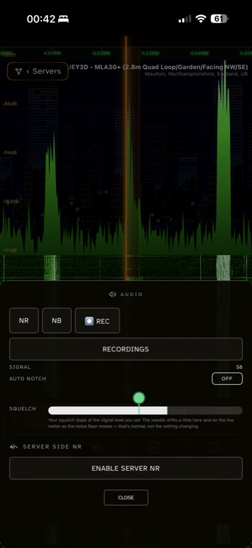
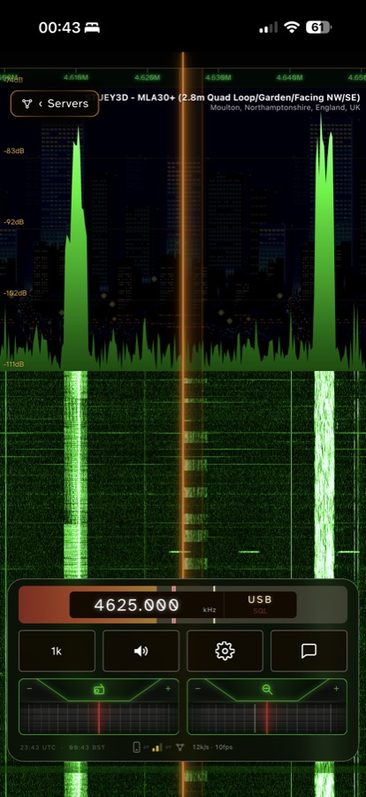
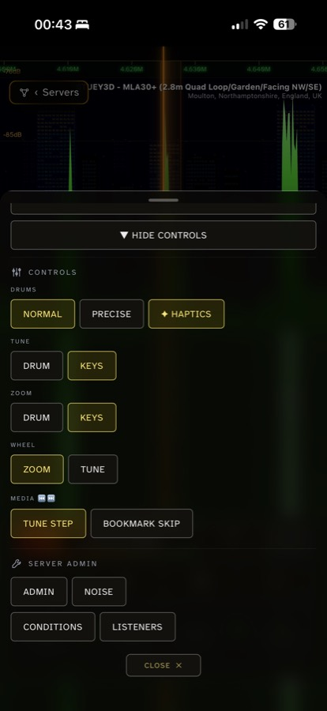
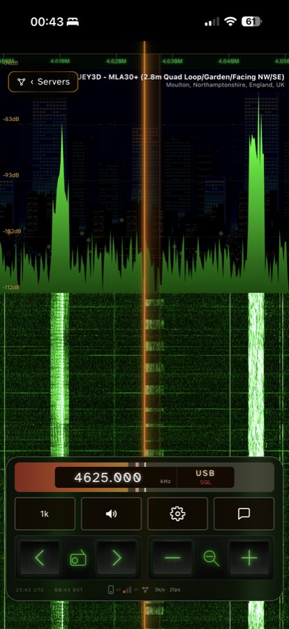
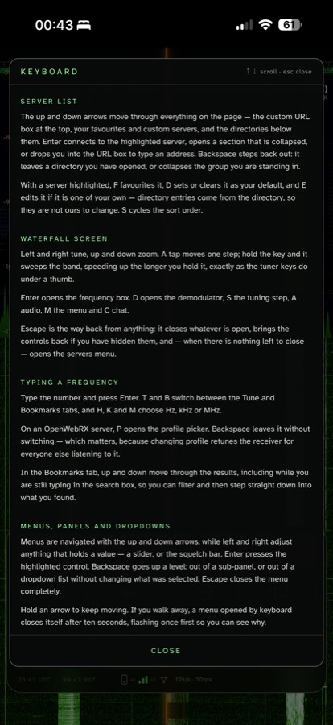
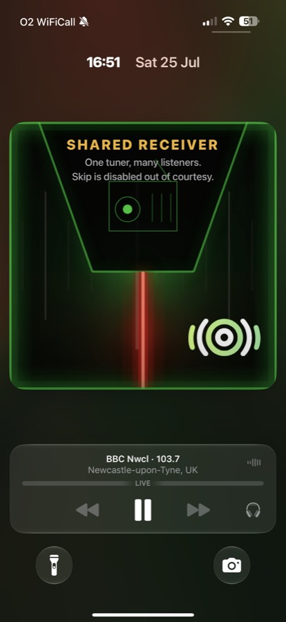
Scroll sideways for more →
AirPlay + keyboard
AirPlay Mirroring throws the receiver onto a television. It's the phone's own screen up there, letterbox and all — but a waterfall a metre wide is a different thing to one in your palm, and you can read the band across the room.
Pair a Bluetooth keyboard and you never have to reach for the phone again. Nearly every button in the app has a key behind it — tuning, zoom, mode, step, the servers list, bookmarks, the menus and panels — so you can put the handset down, kick back across the room and drive the whole thing from the keys with the waterfall on the big screen.
A shack, assembled from a phone and a telly.
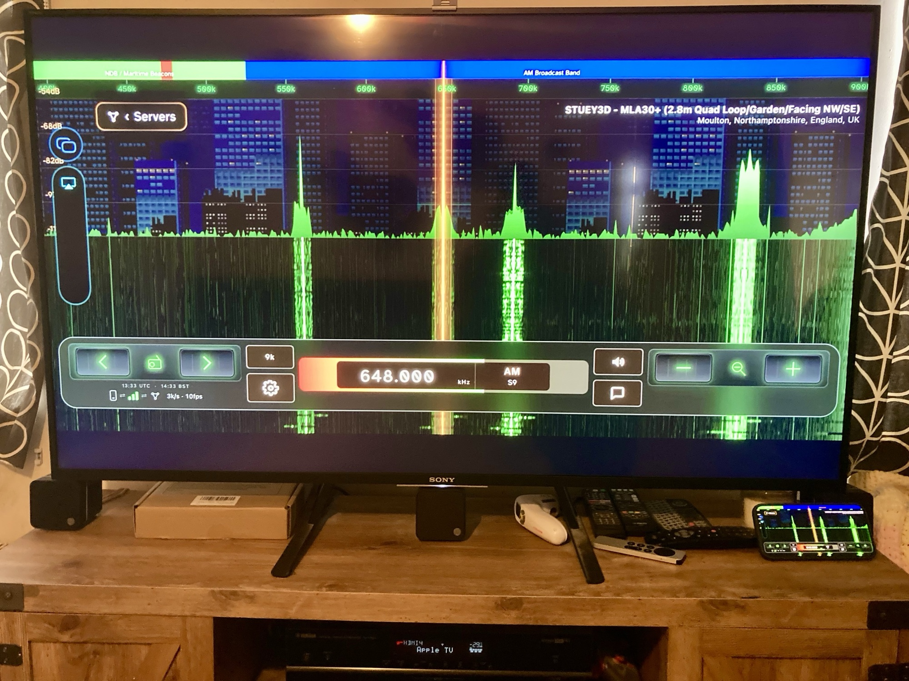
Works with
Native adapters for the major SDR networks, for local USB hardware, and for your own server — all behind the same dial and the same waterfall. Change receiver and nothing about the app changes with it.
Advanced RDS
Not just the station name. The PI code and what it means, PTY, the traffic and music flags, RadioText and RadioText+, Long PS, the clock, the language, alternative frequencies and the other stations in the network.
Then the measurements you'd normally buy hardware for. Pilot and RDS deviation. Block error rate. A live constellation with a scatter figure, the MPX spectrum, and the symbol trace that explains the error rate at a glance.
And the RDS‑to‑pilot phase — the reason this panel exists. Near 0°, or near 90° for quadrature encoding, is correct; the middle ground means a transmitter fault. It will also tell you when a station's encoder isn't locked to its own pilot at all, which draws as a rotating ring rather than two lobes. That's a real fault, found on air, confirmed on two independent receivers.
Calibrated against a PIRA broadcast analyser by Hans van Eijsden, who measured our readings against professional equipment station by station until they agreed. Thank you, Hans.
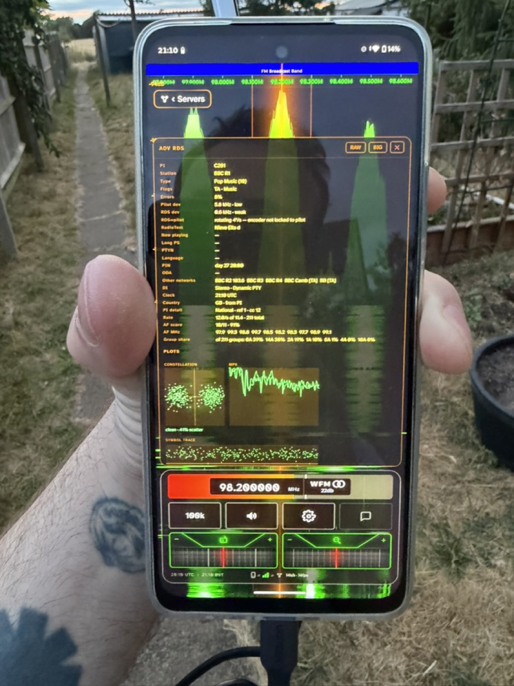
VibeServer · built in, free
Have you got an old Android lying around? If there's one in a drawer somewhere, it has a fast ARM chip, a USB port and a Wi‑Fi radio, and it is doing nothing. Plug an RTL‑SDR or an Airspy into it, tap Use as server, and it's a receiver on your network. No drivers. No config files. No terminal.
It serves its own web page too, so you're not tied to the app — point any browser at vibesdr.local and tune from your desktop. And because VibeDSP does the compression, you're sending a finished radio rather than a firehose of raw IQ: about 25× lighter than rtl_tcp, which is the difference between working over a hotspot and not.
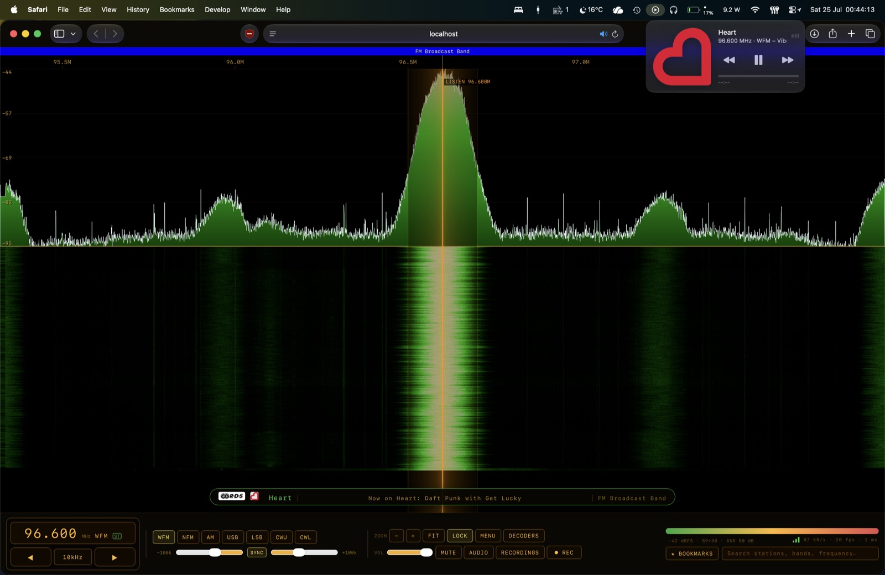
New · macOS · v1.0
The same server, native on Apple Silicon — a menu‑bar app around the same DSP core. Plug in an RTL‑SDR, an Airspy HF+ or an SDRplay RSP, click Open in Browser, and tune. Notarised by Apple, so it opens cleanly.
One receiver at a time. Safe to put on a public site — but if you do open it to the internet, set a PIN, or a listener can change the receiver's hardware settings.
Download VibeServer 1.0 for macOS →The Vibe family
Everything here runs on VibeDSP, so the waterfall you set up on one turns up looking the same on the rest.
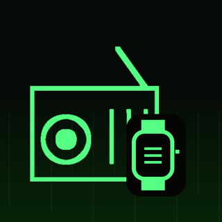
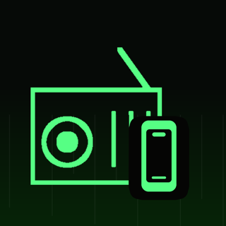
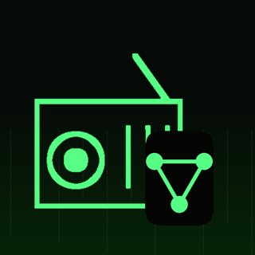
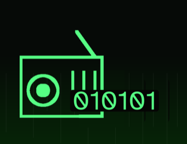
How it's made
Vibe‑coded, but not slop.
I'm not a licensed amateur and I don't transmit. I'm a listener.
It started on the east coast of England as a kid, pulling Dutch television in on an indoor aerial — but only when the weather was exactly right. I didn't know then that I was watching a Sporadic‑E opening. I just knew that some evenings the sky decided to hand me another country, and that was enough to hook me for life. I still chase it: how far can I drag a signal in on an antenna that has no business receiving it?
VibeSDR came out of frustration. I was carrying around a phone more powerful than the computers that used to run this stuff, and every piece of SDR software I tried had clearly been designed for a desk and then squeezed onto a handset.
So I built the receiver I wanted. Designed it, tested it, broke it. Redesigned it, tested it, broke it again. Weeks of late nights and long weekends. Claude wrote the code — hence the name, and I'm not going to pretend otherwise — but every decision, every dead end and every release sign‑off was mine. VibeSDR is human at heart. I don't ship things I wouldn't use myself.